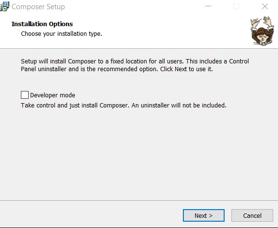
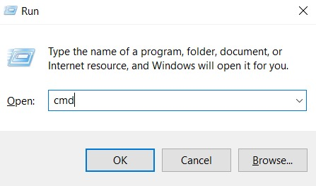

Ikuti saja langkah-langkah ini:
1. Install PHP di komputer. Sebaiknya gunakan XAMPP karena prosesnya mudah dan bisa selesai hanya dalam hitungan menit.
2. Unduh versi terbaru Composer.
3. Jalankan (run) Composer installation wizard. Abaikan jika Anda diminta untuk mengaktifkan mode developer. Lanjutkan proses install.
4. Muncul jendela yang akan meminta Anda untuk mencari baris perintah PHP. Secara default, baris perintah dapat ditemukan di C:/xampp/php/pjp.exe. Setelah itu, klik Next.
5. Permintaan Pengaturan Proxy (Proxy Settings) akan muncul. Kosongkan boks (tidak perlu ditandai) dan lewati bagian ini dengan meng-klik opsi Next. Klik Install di jendela berikutnya.
6. Buka command prompt. Tekan tombol CTRL+R, ketik “cmd” di dalam kolom prompt, dan klik OK.
7. Jalankan perintah berikut ini:
composer
Selesai! Kini Composer berhasil terinstall di komputer Windows Anda. Installer akan menambahkan Composer secara otomatis ke variabel PATH. Buka command prompt dan jalankan software dari mana saja.